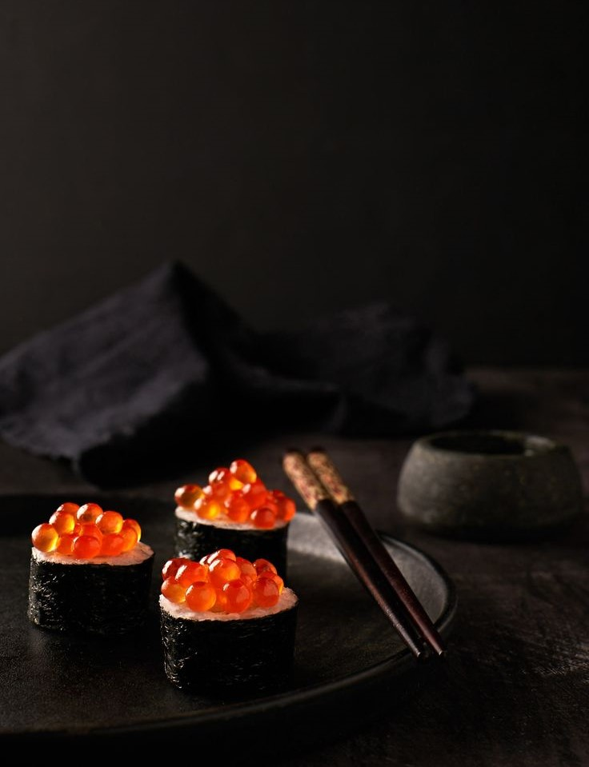

Sakura Bliss Roll
Descubre el Sakura Bliss Roll, una obra maestra creada para celebrar la primavera japonesa. Elaborado con salmón fresco, aguacate cremoso y un toque especial de flores comestibles, todo envuelto en una hoja de nori perfectamente crujiente. Coronado con una salsa de soya cítrica y un secreto del chef que deleitará tus sentidos.